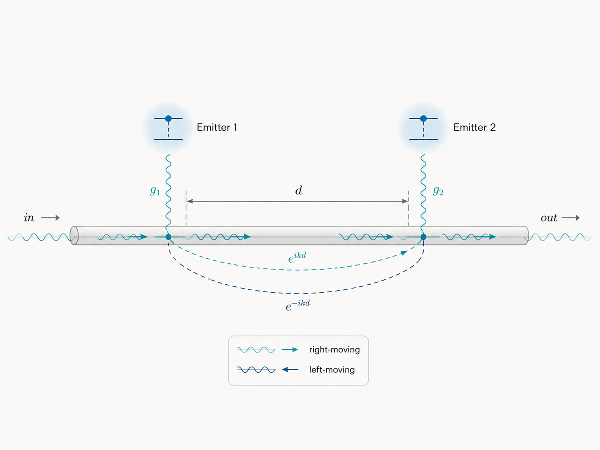
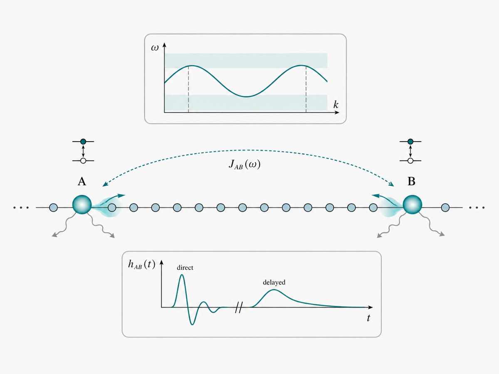
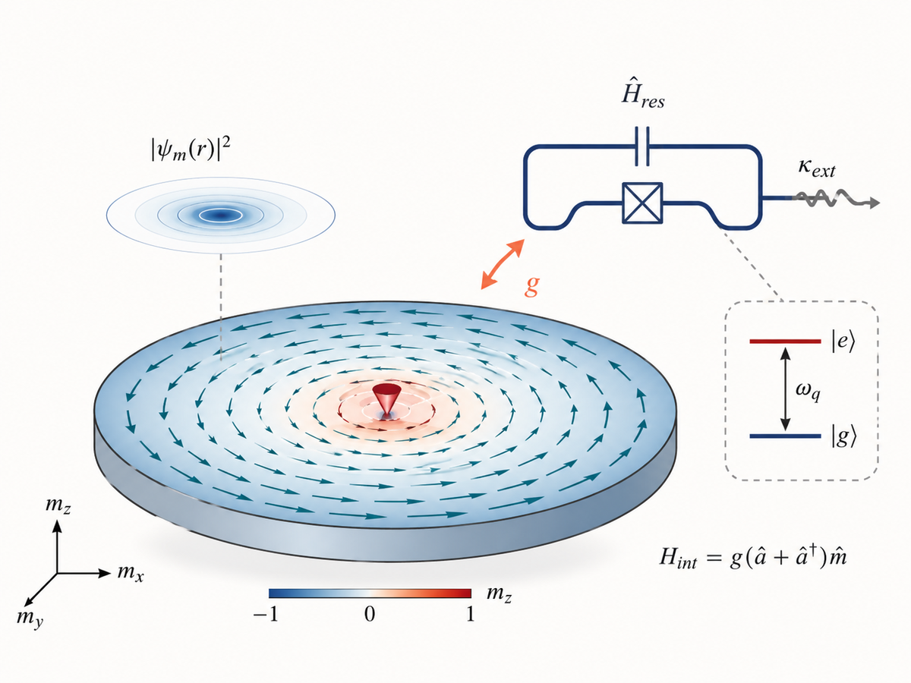

01
Quantum light–matter interactions
Quantum emitters coupled to cavities, waveguides, and superconducting circuits, including giant atoms and ultrastrong-coupling regimes.
Theoretical quantum physics
I study how quantum systems interact with structured electromagnetic and magnetic environments.
Researcher at the Instituto de Ciencias Físicas, UNAM.

My research combines analytical theory and numerical methods to study light–matter interactions, open quantum systems, and collective excitations in magnetic materials. I am especially interested in regimes where geometry, strong coupling, or memory effects produce unconventional quantum dynamics.
Three connected themes organize most of my current work.

Quantum emitters coupled to cavities, waveguides, and superconducting circuits, including giant atoms and ultrastrong-coupling regimes.

Engineered reservoirs, photon bound states, long-range interactions, delayed feedback, and non-Markovian dynamics.

Spin waves and magnetic textures interacting with photons, superconducting circuits, and localized quantum emitters.
My recent work focuses on giant quantum emitters, ultrastrong waveguide QED, structured photonic environments, and magnetic excitations as quantum resources.
Giant atoms, interference, retardation, bound states, and dynamics beyond standard Markovian approximations.
Ultrastrong coupling, structured spectral densities, and nonperturbative descriptions of open quantum systems.
Quantization and coupling of spin waves, vortices, and other magnetic excitations in realistic geometries.
View my complete publication record on Google Scholar.
I am interested in collaborations connecting quantum optics, superconducting circuits, and magnetic materials.
Short explanations, calculations, and perspectives on topics that I find useful or interesting in quantum physics.
A short introduction to spectral densities, memory kernels, and why a structured environment can produce dynamics beyond simple exponential decay.
Read the note →Each note is an ordinary HTML page with MathJax equations, figures, captions, references, and links.
Browse all notes →I teach quantum mechanics, quantum optics, and open quantum systems, and supervise undergraduate and graduate students working on theoretical quantum physics.
Instituto de Ciencias Físicas, Universidad Nacional Autónoma de México, Cuernavaca, Mexico.
For research discussions, collaborations, or student projects, please contact me by email.
carlosgg@icf.unam.mx